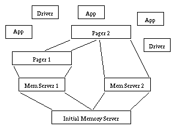
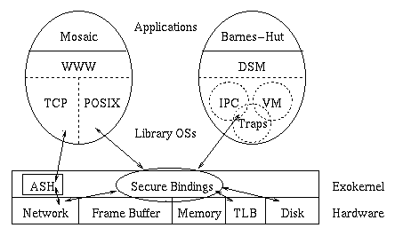

Microkernels
The extent to which simple, efficient operations are a good choice in a
kernel interface design.
Disclaimer:
This survey is not finished work, and its discussion may not even reflect
my current beliefs. It has been put online as a service to the web community,
and should be useful as at least the references are correct!
- Introduction
- The First Generation
- Original Goals
- Reasons For Inefficiency
- Inter-Process Communication Performance
- The Current Generation
- L4
- Exokernel
- SPIN
- Conclusions
- References
1. Introduction
Traditionally the 'kernel' of an Operating System is that part
which is required by all other software running on the system. Thus the
kernel corresponds to the OS part of the Trusted Computing Base (TCB), those
parts of a computing system whose correct behavior is prerequisite to the
correct operation of any other part.
The basic idea of microkernels is to minimize the kernel, and implement as
much of it as possible outside the TCB. The kernel should only export
simple, low-level operations which hopefully allow for more efficient
application implementations. This idea dates back to
[Hansen 70], and a good overview can be found
in [Liedtke 96].
Traditionally kernels are 'monolithic' in the sense that they implement all
their functionality in a relatively unstructured fashion within the TCB.
The advantages of microkernels are obvious from a software engineering
standpoint:
- The TCB is made smaller, reducing the chances of errors due to its
faulty implementation.
- The OS is more modular and thus more flexible and extensible.
- Services previously in the TCB can now possibly have more than one
different implementation, perhaps even running concurrently.
Microkernels initially met with great enthusiasm and in the late 80s there was
much work on them in both academic and commercial settings. This
wave of initial enthusiasm subsided when people started encountering what
seemed to be inherent difficulties with the flexibility and efficiency of
microkernel implementations:
- For some frequent operations, e.g. networking, the overhead of
context-switching was too great for an out-of-kernel implementation.
Thus the microkernels were not as efficient as originally thought.
- There are great difficulties with supporting more than one
implementation of a basic system service, especially when more than one
is to run concurrently.
Thus the microkernels were not nearly as flexible as supposed.
These difficulties were overcome by various compromises to the original
microkernel ideals. Several efficiency-critical features were brought back
into the kernel and the addition of new features into the kernel was supported
through downloadable binary code, or trusted 'kernel-loaded modules'.
But this integration of most drivers and servers back into the TCB largely
eliminates the benefits of the microkernel approach, in the end resulting in an
even more complex monolithic-like OS kernel.
Recently there have been several second generation implementations following the
microkernel philosophy, which claim to solve the flexibility and efficiency
problems of the first generation. How these implementations achieve this goal
differs wildly, with the following three being representative:
- L4 [Liedtke 96]
has a very small microkernel and makes use of
user-level servers, in the spirit of the first generation.
It achieves its goals with very fast Inter-Process Communication and a
flexible memory management scheme.
- Exokernel, [Engler 95]
a tiny microkernel, does away with all traditional OS kernel
abstractions, simplifying the task of the kernel to that of secure
multitasking of resources.
- SPIN [Bershad 95]
takes the approach of downloading code into the
kernel, but in a safe fashion which does not really enlarge the TCB.
It is not at all clear whether these new-generation solutions are truly viable
for real operating systems. What is lacking is the presence of real OSs built
using the strategies of the above systems, much as Chorus and Mach are real
OSs built using the first-generation microkernel strategies. Even so, the
presence of the above systems gives great hope for the future of the
microkernel approach.
There were several real microkernel-based OSs built in the late eighties and
early nineties. Perhaps the two most notable of these are
Mach [Golub 90]
and Chorus [Guillemont 82].
Mach, developed at CMU, was the most successful and has been used in
several commercial systems, such as the NeXTSTEP OS.
There are two goals a new systems architecture must achieve in order to gain
widespread acceptance, those of efficiency and flexibility. Thus originally
microkernels had the goal of running applications faster than existing
monolithic kernels, or at least not slower. In addition, in order to achieve a
real advance in OS design, microkernels necessarily were to allow for new
application structures, as well as supporting all existing types of
applications.
Apart from the above there were great expectations for the microkernel
approach as it was being introduced, and many people expected most or all of
the following benefits:
- A small and simple kernel means less code, as well as simpler code, in
the TCB and thus smaller chances of errors therein.
- A clean microkernel design will enforce and support a highly modular
structure of the entire OS.
- A smaller kernel means more flexibility and extensibility, since there
are fewer existing structures hampering change. Adding new services is
much easier since the servers run independently of each other, and
ideally do not require any service-specific support from the kernel.
- Services previously within the kernel, now provided by external
servers, can make use of kernel-services such as multitasking and
Inter-Process Communication (IPC).
- Servers may crash without the OS crashing, and the OS may even start a
new copy of the server to replace the one which went down.
- Device drivers can be run as servers and reap all the server benefits
described above.
- A microkernel should be able to support multiple personalities in the
form of different services, e.g., APIs, overlaid general OSs etc.,
without the penalties of emulation on top of a full-fledged OS.
2.2. Reasons For Inefficiency
After several microkernels had been built into real OSs, and were being used
for real applications, people found that their performance, when measured
objectively as in [Bershad 92],
was quite lackluster. This inefficiency turned out to have several culprits,
including the following:
- Running previously kernel-integrated services in user-mode requires the
use of a Remote Procedure Call (implemented with two IPCs)
whenever the kernel or client uses a service. The cost of the RPC turned
out to be much higher than a simple system call to the kernel,
on the order of 200 microseconds per RPC versus 40 microseconds for a
traditional system call [Liedtke 93].
- The cost of memory references (the Memory Cycles Per Instruction, or
MCPI) turned out to be much higher in microkernel OSs than in monolithic
OSs, when running the same applications
[Chen 93].
The reasons for this included the following:
- Worse locality properties of the combined microkernel OS code.
- System self-interference, incorrectly invalidating cache lines,
due to more modularity of the OS.
- More inter-module copying due to the higher modularity of the OS.
- The ``legacy'' interfaces and implementation code of the microkernels
did not allow for really efficient functionality of some OS features.
This was largely due to the development history of the microkernels
which had been derived from monolithic kernels, inheriting many of their
interfaces and implementation strategies
[Liedtke 95].
The first item above, IPC cost, has been the primary focus of work intended
to improve microkernel performance, since it has far more impact than MCPI.
Even so, attempts at improving IPC cost in first-generation microkernels, Mach
in particular, were not successful enough, due to the third reason above.
Table 1 below shows the final IPC performance of the Mach OS after much
work had been done to optimize the IPC.
The work on L3, which lead to L4, finally managed to break this performance
barrier.
In [Liedtke 96] it is noted that this Mach
IPC performance is bad enough that roughly 10000 instructions must be executed
between successive RPC calls for only a 10% degradation in speed relative to a
monolithic kernel. This prohibits fine-grained client/server application
structures. More generally, the lack of efficiency in first-generation and
traditional kernels prohibits flexible application/OS structures such as those
supported by IPC.
In comparison the L4 and Exokernel IPCs are a generous order
of magnitude faster, due to their clean-slate implementations.
These kernels are able to do RPC calls every 400th instruction with only 10%
degradation in speed, which should be fine-grained enough for almost all
applications. The SPIN kernel is based on Mach, and therefore shares its high
IPC cost, but this may not be fatal to its performance due to alternative
approach to extensibility.
| | IPC |
| OS | microseconds | instructions |
| Mach | 115.0 us | 1150 |
| L4 | 5.0 us | 50 |
| Exokernel | 1.4 us | 30 |
| SPIN | 102.0 us | 1100 |
Table 1. IPC Performance of the contenders.
The values in the above table, from
[Bershad 95],
[Engler 95], and
[Liedtke 95],
should be taken with a grain of salt since the
comparisons were done on different machines, running at different speeds and
with different instructions. Even so the values should be a good indication of
the relative difference in the IPC performance of the four systems.
The following three systems take radically different approaches to improving
the performance of the first-generation microkernels. We therefore describe
each system in some detail and in isolation from the others, leaving a
comparison of them to the conclusion.
3.1. L4
L4, [Liedtke 96],
was developed by J. Liedtke and his group in 1995 and is the direct
descendant of L3, a first-generation microkernel.
The from-scratch development of L4, along with its small size and simple
interfaces, allow it to escape the third legacy-code type of microkernel woes.
L4 is based on the thesis that microkernels are processor dependent,
i.e., that like code optimizers, microkernels are inherently not portable,
although they improve the portability of the whole system. L4 supplies
three abstractions, address spaces, threads and IPC, and implements only seven
system calls. The threads in L4 are user-level, but with support from the kernel
for communication and address-space management. These two last abstractions,
address spaces and IPC, are particular interesting in L4, and are discussed in
detail below.
3.1.1. Address Spaces
The L4 microkernel provides the basic mechanisms to implement physical memory
management and various protection schemes. The basic idea is to support
recursive construction of address spaces outside the kernel, as shown
in Figure 1 below.

Figure 1. Recursively Constructed Address Spaces in L4.
The initial address space represents the physical memory and is owned by
the initial-memory server. The owner of a virtual page can, using operations
provided by L4, transfer its ownership to (grant), or share it with (map), a
consenting recipient process. The owner can also remove any shared pages
(demap) from the recipient's address space, without any prior agreement between
the two processes.
This functionality allows the implementation of memory management and paging
outside the kernel. Mapping and demapping are adequate to implement memory
managers and pagers on top of the microkernel. Granting is used only in
special situations to avoid double bookkeeping and address-space overflow, see
[Liedtke 95]. In order to verify process
consent IPC is used to implement memory management and paging, which further
emphasizes the need for fast IPC.
3.1.2. IPC implementation
L4 inherited a surprisingly fast IPC implementation from an improved
version of L3 (see [Liedtke 93]),
whose performance can be seen in Table 1.
This order-of-magnitude improvement in IPC time was achieved
using a great variety of optimizing techniques. Below we discuss some of those
techniques which resulted in the largest performance gains, with the full set
to be found in [Liedtke 93].
- Passing Short Messages
A high percentage of IPC messages are very short. By transferring those
messages in registers a two-fold performance improvement can be obtained.
- Copying Large Data Messages
Most microkernels transfer messages between processes by a twofold copy,
from process A space into kernel space into process B space.
This double copy is superfluous when message buffering is not
required. The performance hit is very great, especially for long
messages, since Translation Lookaside Buffer (TLB) and cache misses are
incurred. L4 allows for single-copy transfers by temporarily sharing the
target region with the sender, resulting in a two-fold performance
improvement for 512-byte messages, and more for longer messages.
- Lazy Scheduling
Conventional IPC requires updating of thread scheduler queues.
Performance can be improved by
delaying the movement of threads within/between queues until the queues
are queried. This ``lazy'' scheduling is achieved
by setting state flags in the Thread Control Blocks and then scanning
queues at query time for threads which should be moved to different
queues. This weakens the semantics of queues, and occasionally causes
an expensive queue operation, but overall improves the performance of
small message IPC by around 25%.
3.2. Exokernel
Exokernel, [Engler 95],
was developed at MIT in 1994-1995. The main motivation behind its
development is that kernel-provided abstractions are too costly and
restrict flexibility. This thesis is supported by a version of the
"end-to-end" argument: Applications know better than OSs what the goal of
their resource management decisions should be and, therefore, they should
be given as much control as possible over those decisions.
The microkernel should, therefore, only provide the minimal
necessary set of primitives to securely multiplex hardware resources.
Higher-level functionality is provided by library OSs, which are user-supplied
and untrusted by the Exokernel. In order for the Exokernel to be as simple and
efficient as possible even its exported interfaces are hardware dependent.
Most of the time the Exokernel is simply exporting hardware functionality.

Figure 2. The Structure of Exokernel-based Application/OSs.
Figure 2 above shows the structure of an Exokernel-based system with two
applications making use of different library OSs. As the Exokernel has to
accommodate for untrusted higher-level OSs its main goal is to securely export
and multiplex the hardware primitives and resources. The Exokernel employs
three techniques to accomplish this, Secure Bindings,
Visible Resource Revocation and Abort Protocols, each of
which is discussed below.
3.2.1. Secure Bindings
As the actual management of resources is left to library OSs, there must
be a mechanism for separating the protection of the resources from their
management. Secure bindings are this mechanism, and the Exokernel
implements them using three different techniques: hardware mechanisms,
software caching and downloadable application code.
A common hardware mechanism is the TLB. Secure bindings can be
implemented as mappings from virtual to physical addresses, i.e.,
as a TLB entry. If the hardware TLB is not large enough it is wrapped in
a larger software TLB to cache such mappings. Another hardware mechanism,
available on some Silicon Graphics systems, is a frame buffer with an ownership
field associated with each pixel. There the hardware deals with protection of
the frame buffer, with the Exokernel only being involved when pixels change
ownership. It is also possible to download code into the kernel which is
invoked on every resource access or event to determine ownership and what
actions the kernel should perform. A packet filter is an example of such code.
Actually, this feature of downloading code can be used for more than just the
implementation of secure bindings. More generally, an
Application-specific Safe Handler (ASH) can be downloaded into
the kernel and be allowed to perform general computation. This capability is
performance motivated and is used to reduce the number of
context switches between kernel and user mode, especially in situations
where time limits make these switches impractical, such as network ACKs on
packet receives. The ASHs, and in general all downloaded code, are untrusted
and are made safe by a combination of code inspection (type-safe languages are
used), guarded interpretation and sandboxing, much as in SPIN.
3.2.2. Visible Resource Revocation
Visible revocation has higher latency than traditional invisible
revocation but allows the library OSs to guide deallocation and know about
resource scarcity.
The Exokernel exports physical names for efficiency and better resource
management, as this allows the elimination of a level of indirection
and, also, physical names usually encode useful resource attributes.
This makes visible revocation necessary, since the library OS needs to
update its physical references.
3.2.3. Abort Protocols
As the library OSs are not trusted, the Exokernel should accommodate for
their un-cooperation. When a revocation request is not satisfied in a timely
manner, the Exokernel has the power to break any relevant secure bindings ``by
force'' and regain the requested resource. The Exokernel notifies the
mischievous library OS of the revocation but doesn't take any more drastic
measures. An alternative approach would have been to kill the relevant
application, but this was decided against in order to minimize damage.
3.2.4. Reservations
The Exokernel approach is very radical, and inspires excitement reminiscent of
the enthusiasm for the original microkernels. The fate of those microkernels
should, however, have a sobering effect. It should be noted that the main
Exokernel papers do not discuss several key aspects of OSs, such as file
systems, and their reliance on special hardware for efficient frame buffers
feels like cheating. Thus the Exokernel approach of hardware-level
non-abstractions may only be good for specialized machine-code-level
applications such as the WWW server described in
[Kaashoek 96].
Even so, this incompleteness may just be a sign of the immaturity of the
current Exokernel implementations, rather than an inherent problem of the
approach. Indeed there is a new paper,
[Grimm 96], which deals with the
implementation of an efficient ``Exo-file-system''.
SPIN, [Bershad 95],
is based on the last version of the Mach microkernel, adding to it the
ability to download safe code and thus extend the kernel. As such it shows,
in a way, the latest generation of techniques developed to combat the
lackluster performance of first-generation microkernel OSs. It's presentation
here is therefore both appropriate and necessary.
SPIN uses language and link-time mechanisms to
allow the dynamic extension of kernel services. Applications can
download code for new OS services into the kernel, and are thus able to
create fine-grained OS interfaces tailored to their specific needs.
The extensions are translated by a kernel compiler, dynamically linked into
the kernel and executed within the kernel's virtual address space.
3.3.1. Flexibility
The above approach to kernel extensibility immediately brings up the question
of safety: Can the user-supplied code be trusted?
SPIN addresses this problem by using a type-safe language, Modula-3, and
by sandboxing the downloaded code. Thus the compiler performs static
analysis and inserts run-time checks, guaranteeing that the compiled code does
not violate the integrity of the kernel, other modules or user-level code.
As the kernel makes no assumptions about the safety of the imported code,
the claim can be made that the compiled extensions do not increase the TCB.
The isolation of each individual module
guarantees that if an application crashes, e.g., due to a faulty extension
module downloaded into the kernel, the rest of the system is not affected.
SPIN provides a set of core services for
managing memory and processor resources. Their level is similar to the
internal interfaces found in monolithic OSs. Kernel extensions can use the
core services as building blocks, as well as just perform arbitrary computation.
The core services include operations supporting application control over
virtual-memory, e.g., translation services for addresses. The core services
also include lower-level interfaces for process management, defining a set of
events to be handled by the users thread package and scheduler, as well as
including a global scheduler which determines the recipient threads package of
an event.
3.3.2. Performance
The advantages of kernel extensions with regard to flexibility and
extensibility are obvious, allowing even on-line modification of the kernel.
As for performance, adding functionality to kernel reduces to some extent the
number of IPCs, both to/from the kernel and between processes.
This in a way compensates for the high IPC cost measured. Even so it may be
the case that the optimizations applied to L4 will work for SPIN also, reducing
the cost of the remaining IPC operations.
Another, potentially more crucial, performance problem is the efficiency of the
kernel compiler. Proving a code module safe is not a trivial task and the
resulting latency of installing new kernel extensions can sometimes be
unacceptable. However, the current version of SPIN uses an external compiler
which is an improvement from previous interpreter or internal compiler based
systems [Pu 88].
In SPIN the compiler can be multitasked and the size of the kernel is
smaller. Further improvements to the compiler interface might include caching
compiled code to reduce amortized compile-time latency, and specialized
optimizations dealing with such things as nested IPC redirections.
First let us look at how the three systems we examined above meet the original
goals of microkernels stated in Section 2.1.
All three systems are reported to perform as well, or better, than the
traditional monolithic kernels, and all three can be said to support novel
application structures (recursive address spaces, library OSs and kernel
extensions respectively). So what remains is to check the enumerated list of
Section 2.1:
- All three have small TCBs, L4 and Exokernel being only a few kilobytes
in size. SPIN is the largest of the three, as large as Mach (a few
hundred kilobytes).
- This can be argued both ways for the three systems. L4 provides a small
set of simple interfaces and does indeed support a modular structure.
Exokernel and SPIN, however, allow applications and OS parts to be as
intertwined as desired, outside and inside the kernel respectively.
- All three systems seem to satisfy this criterion. Exokernel, with its
lack of abstractions is indeed very flexible; L4 has simple abstractions
designed to be as flexible as possible; and SPIN has a directly
extensible kernel. In the case of L4 and SPIN, however, it is not so
clear whether there could be two radically different servers for the
same resource running concurrently, since the given abstractions may not
be flexible enough for this.
- This is satisfied in all three systems, although more complicated than
traditionally in SPIN due to the interaction of code running inside and
outside the kernel.
- All three systems support this fully, at least for servers which don't
require access to hardware features which can corrupt the entire system,
such as DMA. For those servers, however, there is nothing which can be
done to eliminate the possibility of system corruption, although
static checking and sandboxing should lessen the problem.
- Same as immediately above.
- This is especially true for the Exokernel, and is also true for L4.
SPIN should also be able to support multiple personalities, but due to
the more heavyweight nature of its kernel it is not clear whether all
code would need to run within the kernel, and if so, whether the
necessary kernel-bloat would have many negative effects.
From the above it is clear that the current generation of microkernels have
solved the IPC and legacy problems mentioned in
Section 2.2, but they do not seem to have
solved the problem of higher MCPI in microkernels (from
[Chen 93]). This should actually be a great
cause for concern, since, with rapidly increasing internal CPU speed, cache
performance is becoming more and more of an issue.
In [Liedtke 95], however, it is stated that
making the kernel small enough to fit almost entirely into the cache will
eliminate this problem. The SPIN approach of computing within the kernel may
also be a solution to this problem, despite the large kernel size.
The one common aspect of the current generation of microkernels
is extensibility through downloaded code proven safe. This capability seems
crucial for future high-speed networking and distributed OSs, especially with
the sharply increasing relative cost of process-switching
[Engler 95]. It is thus curious that L4
does not as of yet support kernel-downloadable extensions. A reading of the L4
papers, however, reveals that the system does in fact not have very
good network performance, and one can guess that it is only a matter of time
before they remedy this with downloadable extensions.
The complexity of the interface exported by second-generation microkernels
varies greatly. L4 and Exokernel both provide simple, low-level operations.
L4 provides the rudimentary kernel abstractions required for address-space and
thread management, while the Exokernel provides the bare hardware-dependent
primitives required for secure multitasking of resources. SPIN, on the other
hand, exports a varied interface, with an application seeing
the first-generation microkernel interfaces inherited from Mach, as well as the
internal interfaces for kernel-downloaded code.
The existence of ASHes in the Exokernel blurs the global picture even more.
The proper set of kernel-provided operations is thus probably a
mixture of efficient low-level operations and the ability to extend the kernel
with higher-level operations when they are needed, e.g., to support
time-critical functionality such as networking.
The Exokernel's hardware dependence may perhaps be a serious drawback.
In [Liedtke 95] it was found that building
very low level abstractions, such as those exported by L4, is extremely CPU
dependent, requiring completely different approaches for successive members of
the Intel x86 family.
This seems to indicate that building low-level library OSs on top of Exokernels
may be something which needs to be redone for each generation of processors.
Such a high level of non-portability would be a very serious impediment for any
real acceptance of Exokernel-based OSs.
In conclusion, we should stress what we have already pointed out in the
introduction. The most important liability of the second-generation
microkernels is the complete lack of real OSs based on them. Only every-day
practical experience can prove an OS truly viable. As these
microkernels are very recent it is still far too early for their final
judgement. Time can be their only definite judge.
[Bershad 92]
B.N. Bershad, R.P. Draves and A. Forin.
Using Microbenchmarks to Evaluate System Performance.
In Proceedings of the Third Workshop on
Workstation Operating Systems, pp. 148-153, Key Biscayne, FL, April
1992.
[Bershad 95]
B.N. Bershad, S. Savage, P. Pardyak, E.G. Sirer, M.E. Fiuczynski, D.
Becker, S. Eggers and C. Chambers.
Extensibility, Safety and Performance in the SPIN Operating System.
In Proceedings of the 15th ACM Symposium on
Operating System Principles (SOSP)(Copper Mountain Resort, Colo.,
Dec. 1995) ACM Press, 1995, pp. 267-284.
[Chen 93]
J.B. Chen and B.N. Bershad.
The Impact of Operating System Structure on Memory System Performance.
In 14th ACM Symposium on
Operating System Principles (SOSP), Asheville, NC, pp. 120-133.
[Engler 95]
D.R. Engler, M.F. Kaashoek and J. O'Toole.
Exokernel,
an operating system architecture for application-level resource management.
In Proceedings
of the 15th ACM Symposium on Operating System Principles (SOSP)
(Copper Mountain Resort, Colo., Dec. 1995) ACM Press, 1995, pp. 251-266.
[Golub 90]
D. Golub, R. Dean, A. Forin, and R. Rashid.
Unix as an application program.
In Proceedings of the Usenix Summer Conference
(Anaheim, Calif., June 1990). Usenix Association, 1990, pp. 87-96.
[Grimm 96]
R. Grimm, G.R. Ganger, M.F. Kaashoek and D.R. Engler.
Application-Controlled Storage Management.
Submitted for publication.
[Guillemont 82]
M. Guillemont.
The Chorus distributed operation system: Design and implementation.
In Proceedings
of the ACM International Symposium on Local Computer Networks
(Firenze, Italy, Apr. 1982) ACM Press, 1982, pp. 207-223.
[Hansen 70]
P.B. Hansen.
The nucleus of a multiprogramming system.
Communications
of the ACM, 13(4):238-241, April 1970.
[Kaashoek 96]
M.F. Kaashoek, D.R. Engler, G.R. Ganger and D.A. Wallach.
Server operating systems.
This paper appears in the 1996 SIGOPS European Workshop,
September 9-11, 1996.
[Liedtke 93]
J. Liedtke.
Improving IPC by kernel design.
In 14th ACM Symposium on
Operating System Principles (SOSP), Asheville, NC, pp. 175-188.
[Liedtke 95]
J. Liedtke.
On microkernel construction.
In Proceedings
of the 15th ACM Symposium on Operating System Principles (SOSP)
(Copper Mountain Resort, Colo., Dec. 1995) ACM Press, New york, 1995,
pp. 237-250.
[Liedtke 96]
J. Liedtke.
Toward Real Microkernels.
Communications of the ACM, 39(9):70-77, September 1996.
[Pu 88]
C. Pu, H. Massalin and J. Ioannidis.
The Synthesis Kernel.
Computing Systems, 1(Jan. 1988): 11-32.
Úlfar Erlingsson
<ulfar@cs.cornell.edu>
and
Athanasios Kyparlis
<kyparlis@cs.cornell.edu>
Last modified: Mon Dec 2 18:22:15 1996